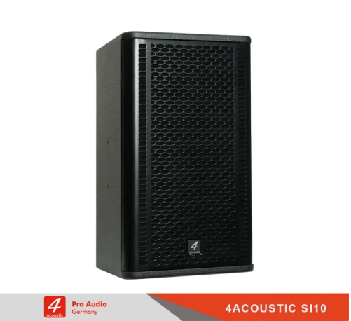

Loa 4Acoustic Si10
Số lượng:
Trong thế giới công nghệ âm thanh ngày càng phát triển, loa 4Acoustic Si10 đã nhanh chóng chiếm lĩnh sự chú ý của người dùng với khả năng tái tạo âm thanh sắc nét và chất lượng đáng kinh ngạc. Với việc sở hữu một bộ loa 4Acoustic Si10, bạn sẽ được trải nghiệm một cảm giác hoàn toàn mới khi thưởng thức âm nhạc hay xem phim tại nhà.
Loa 4Acoustic Si10 - Sức hút đến từ sự sang trọng trong thiết kế
Loa karaoke Si10 với thiết kế sang trọng đã trở thành một trong những lựa chọn hàng đầu cho người yêu âm nhạc. Với tầm nhìn và tâm huyết của các nhà thiết kế hàng đầu, loa Si10 đã được tạo ra để mang đến trải nghiệm âm thanh tuyệt vời và một cái nhìn thẩm mỹ đẳng cấp.
Thiết kế của loa 4Acoustic Si10 thể hiện sự tinh tế và sự chú trọng đến từng chi tiết. Vỏ ngoài được làm bằng chất liệu cao cấp, có độ bền và độ cứng cao, đồng thời tạo nên một vẻ ngoài lịch lãm và sang trọng. Các góc cạnh được bo tròn mềm mại, mang lại sự mềm mại và hiện đại cho thiết kế tổng thể của loa.
Loa chuyên nghiệp 4Acoustic Si10 có kích thước nhỏ gọn, với các đường nét tinh tế và thanh lịch. Với chiều cao và chiều rộng lý tưởng, loa có thể dễ dàng điều chỉnh và đặt trong nhiều không gian khác nhau, từ phòng khách cho đến phòng ngủ hay văn phòng làm việc. Điểm nhấn là màn hình điều khiển nằm ở mặt trước của loa, vừa tạo điểm nhấn thẩm mỹ vừa giúp người dùng dễ dàng điều chỉnh âm lượng và các chức năng khác.
Loa 4Acoustic Si10 nổi bật với chất âm ngọt ngào

Loa karaoke Si10 đã nổi bật trong thị trường âm thanh với chất âm ngọt ngào đầy cuốn hút. Với những công nghệ tiên tiến và sự tâm huyết của các nhà thiết kế, loa Si10 đã tạo ra một trải nghiệm nghe nhạc đích thực, đem đến âm thanh tinh tế và cảm xúc sâu lắng.
Chất âm ngọt ngào của loa 4Acoustic Si10 là kết quả của việc sử dụng các linh kiện cao cấp và quy trình sản xuất chất lượng. Từ các loa bass mạnh mẽ cho đến các loa treble tinh tế, mọi chi tiết được điều chỉnh và cân chỉnh để tạo ra âm thanh mượt mà, trung thực và tự nhiên. Điều này cho phép bạn thưởng thức âm nhạc với một phong cách độc đáo và một lớp âm thanh sâu lắng.
Loa hát karaoke chuyên nghiệp 4Acoustic Si10 cung cấp một dải âm rộng, từ âm trầm mạnh mẽ đến âm cao trong trẻo. Âm bass sẽ làm rung chuyển không gian, mang đến sự sống động và đặc biệt cho âm nhạc. Các âm giữa sẽ mang lại chi tiết tuyệt vời và sự phân loại âm thanh tốt, giúp bạn tận hưởng từng giai điệu. Âm cao sẽ vô cùng rõ ràng và mượt mà, không bị méo mó hay mất cân bằng, tạo ra một không gian âm thanh rộng lớn và sâu lắng.
Ngoài chất âm đỉnh cao, loa chuyên nghiệp cao cấp 4Acoustic Si10 còn có một thiết kế nổi bật. Với vỏ ngoài bằng chất liệu cao cấp và các chi tiết mạnh mẽ, loa thể hiện một vẻ đẹp sang trọng và tinh tế. Thiết kế nhỏ gọn và thanh lịch giúp loa dễ dàng kết hợp với bất kỳ không gian nào trong nhà bạn, từ phòng khách cho đến phòng ngủ hay văn phòng làm việc. Loa cũng đi kèm với các tùy chọn màu sắc đa dạng, giúp bạn lựa chọn phong cách phù hợp với không gian của bạn.
| THÔNG TIN SẢN PHẨM | |
|---|---|
| Cấu tạo: | loa 2 đường tiếng |
| Mã sản phẩm: | SI10 |
| Chất liệu vỏ: | gỗ Bạch Dương |
| Loa Bass: | 25cm |
| Công suất: | rms 300W, program 600W, peak 1200W |
| Trở kháng: | 8ohm |
| Cường độ phát âm cực đại: | 128dB |
| Độ nhạy (1w @ 1m): | 98dB |
| Tần số đáp tuyến: | 50 Hz - 20 kHz |
| Góc phủ âm (Ngang x Dọc): | 90°x40° |